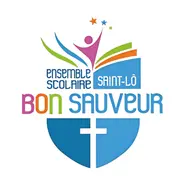

À JOUR
À NE PAS OUBLIERAucun rappel important
Tout est à jour pour le moment.

Tout est à jour pour le moment.
Les dates à connaître pour s’organiser : classe, orientation, DNB, stage, certifications et établissement.
Les événements vont apparaître ici.
Les cours de la semaine. En cas de différence, ÉcoleDirecte reste la référence.